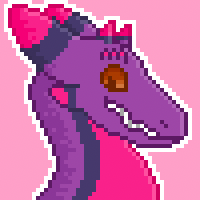
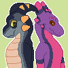
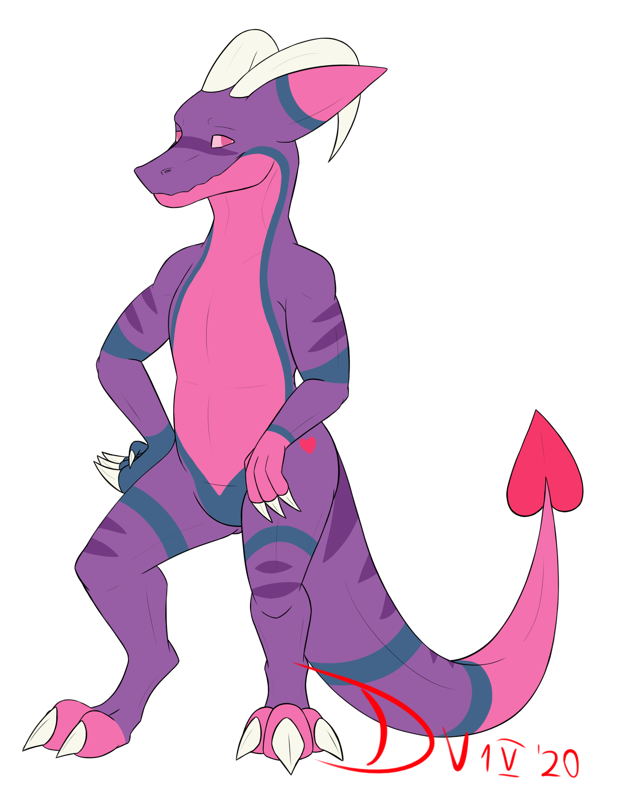
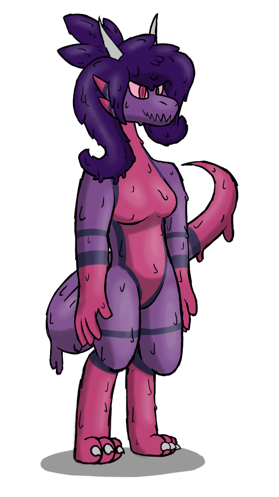
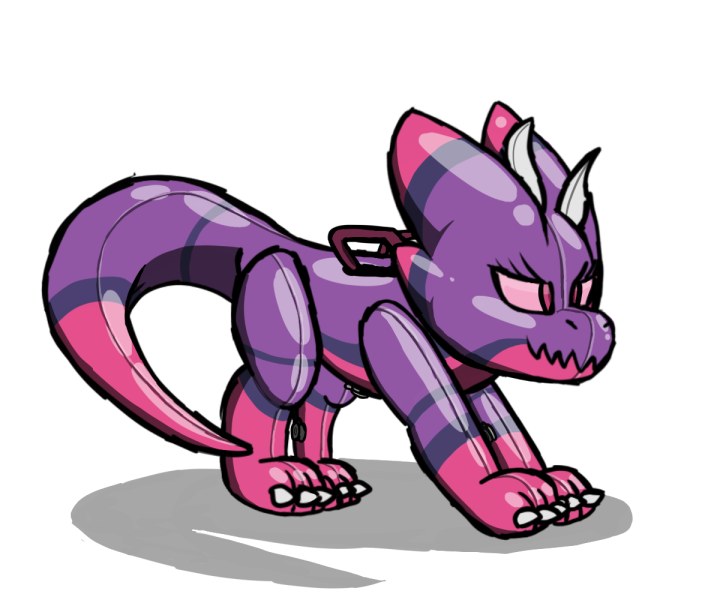

The Art Gallery

Nexii
My favorite rendering of Nexii so far, done by the talented umbreveon on FA! This is the SFW version, the NSFW version is not available on this site, nor my FA profile.
I strongly suggest trying umbreveon if you need some art drawn up, he's a great artist and works decently fast, and on top of that, his commissions are extremely fairly priced!

Nexii Icon
One of my favorite icons I own, second only to the one I got of Nexii and Vesereo together! An amazing piece by RixieCoyote on Telegram!

Nexii and Vesereo Icon
Another piece I commissioned from RixieCoyote, and this is easily my favorite profile picture to use. I usually use the transparent background version overlaid upon a trans pride flag or with no background at all.

Nexii by Devvv
This was my first commission from Devvv on FA. He's easily one of my favorite artists, and a good friend of mine! I do strongly suggest commissioning him, especially if you have a dragon character you want some art of!
Devvv specializes in inflation-related art, but he can also draw non-puffy things as well, such as this render of Nexii!

Goo Dragoness Nexii
This was a gift drawn by my close friend Retro5hole on FA. Goo Dragoness Nexii is meant to be an alternate version of Nexii that is based loosely off of Oksara's goo dragoness character.
This piece is one of my favorite full-body pieces that I have had drawn for me, Retro5hole caught the drippy nature of goo perfectly in my eyes, and did amazing on th4e shadows! He doesn't do commissions yet, but I do suggest checking his FA, he does requests frequently too!

Anthro Kobold Pooltoy Nexii
This was another gift from Retro5hole, this one is a pooltoy version of Nexii that we might end up using in a comic we started to write!